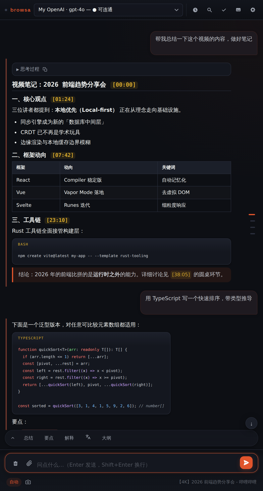

Guide / Quick start
Quick start
Four steps: install the extension → open the side panel → connect your own model → ask your first question. About five minutes total.
1 · Install the extension
Get the code
git clone the repo, or grab a zip from Releases and unpack it.
Load it
Open chrome://extensions (Edge: edge://extensions) → enable Developer mode → Load unpacked → select the browsa/ directory. Requires Chrome / Edge 114+ — any recently auto-updated browser qualifies.
browsa is an unpacked extension loaded through developer mode. It costs nothing and asks for nothing beyond what it needs.
2 · Open the side panel
On any page, press Ctrl+Shift+H (macOS: Command+Shift+H) or click the browsa toolbar icon. The panel opens on the right side of the page and follows whichever tab you switch to.
3 · Connect your own model
browsa ships with no model of its own — it brings the backend you configure into the panel. Click ⚙ Settings in the panel's top bar:
- Plain chat models: any endpoint compatible with OpenAI, Anthropic, or Ollama. Fill in Base URL + API Key + Model ID, then Save.
- Hermes Agent / OpenCode Agent: optional agent backends with tool execution, both built in — see Connecting backends.
Then hit Ping to verify — the first provider that pings successfully becomes active automatically.
localhost:11434) for fully offline use, or grab a key from any cloud provider's console. Field-by-field details live on the Connecting backends page.4 · Ask your first question
- Open an article (or a video, or a PDF), press Ctrl+Shift+H.
- Click 📎 next to the composer — the current page is attached, and a note above the input confirms what was read.
- Type your question and press Enter. The reply streams in token by token, with Markdown, formulas, and diagrams rendered right in the panel.
Don't feel like typing? Use the quick-action buttons above the composer — Summarize / Key Points / Explain / Outline — one click runs the task on the current page.

UI language
Settings lets you switch the interface to English / 中文 / Auto (follows the browser) — effective immediately, no reload. The language replies come back in can be pinned separately via the reply-language setting.